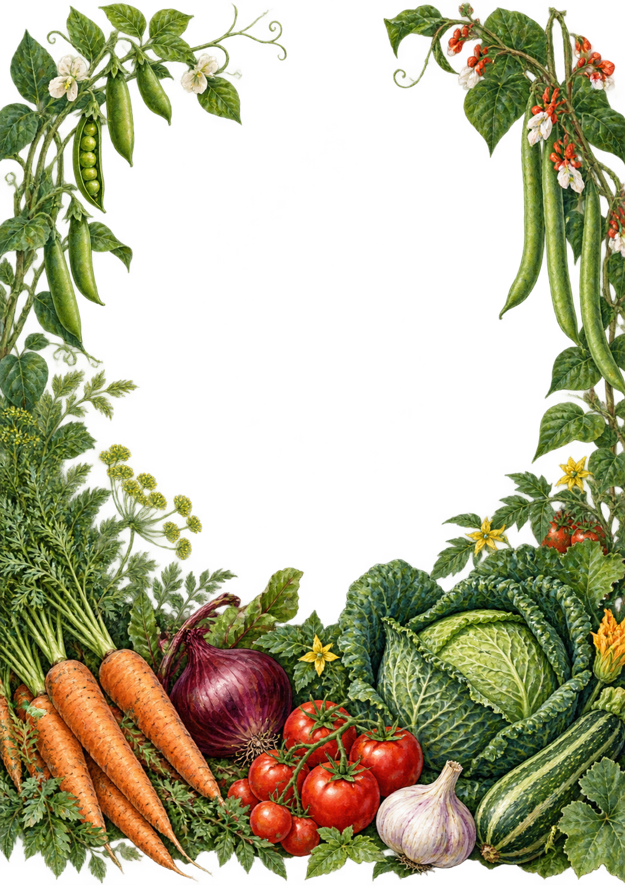
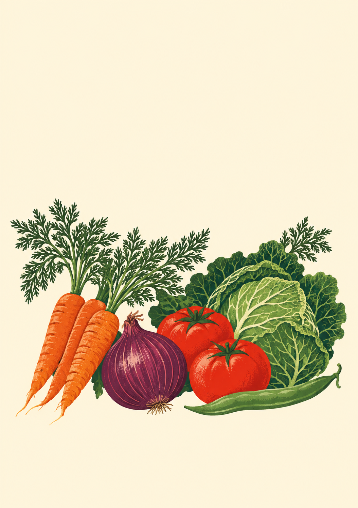

<!doctype html><html lang="en"><meta charset="utf-8"><title>Vegetable Growing Cheat Sheets — cover studies</title>
<style>
*{box-sizing:border-box}html,body{margin:0}body{background:#d9ded3} @page{size:A4;margin:0}
.cover{width:210mm;height:297mm;position:relative;overflow:hidden;break-after:page;text-align:center;print-color-adjust:exact;-webkit-print-color-adjust:exact}
.cover:last-child{break-after:auto}.art{position:absolute;inset:0;width:100%;height:100%;object-fit:cover}.copy{position:absolute;z-index:1;left:12%;right:12%}h1,p{margin:0}
.harvest{background:#183e30;color:#fff3d5}.harvest .copy{top:24.2%}.harvest .rule{width:42px;height:3px;background:#d6ac64;margin:0 auto 26px}.harvest h1{font:normal 91px/.98 Georgia,serif;letter-spacing:-4px}.harvest h1 span{display:block}.harvest .kind{font:600 25px/1.3 'Gill Sans',Arial,sans-serif;letter-spacing:5.2px;margin-top:28px}.harvest .tagline{font:italic 21px/1.5 Georgia,serif;margin-top:38px;color:#efdab2}
.packet{background:#fff5dd;color:#234630}.packet:before{content:'';position:absolute;z-index:1;inset:8mm;border:2.5mm solid #234630;pointer-events:none}.packet:after{content:'';position:absolute;z-index:1;inset:12.5mm;border:.35mm solid #234630;pointer-events:none}.packet .copy{top:10.4%;left:9%;right:9%}.packet h1{font:900 66px/.99 'Arial Black',Arial,sans-serif;letter-spacing:-2.7px}.packet h1 span{display:block}.packet .kind{display:inline-block;margin-top:20px;padding:12px 25px 11px;background:#c94d28;color:#fff5dd;font:700 27px/1 'Gill Sans',Arial,sans-serif;letter-spacing:4px}.packet .tagline{position:absolute;z-index:2;left:12%;right:12%;bottom:8%;font:italic 21px/1.3 Georgia,serif;color:#234630}
body[data-only=a] .packet,body[data-only=b] .harvest{display:none}
</style>
<section class="cover harvest"><div class="copy"><div class="rule"></div><h1><span>Vegetable</span><span>Growing</span></h1><p class="kind">CHEAT SHEETS</p><p class="tagline">Practical advice. At a glance.</p></div></section>
<section class="cover packet"><div class="copy"><h1><span>VEGETABLE</span><span>GROWING</span></h1><p class="kind">CHEAT SHEETS</p></div><p class="tagline">Practical advice. At a glance.</p></section>
<script>const v=new URLSearchParams(location.search).get('cover');if(v==='a'||v==='b')document.body.dataset.only=v;</script></html>
